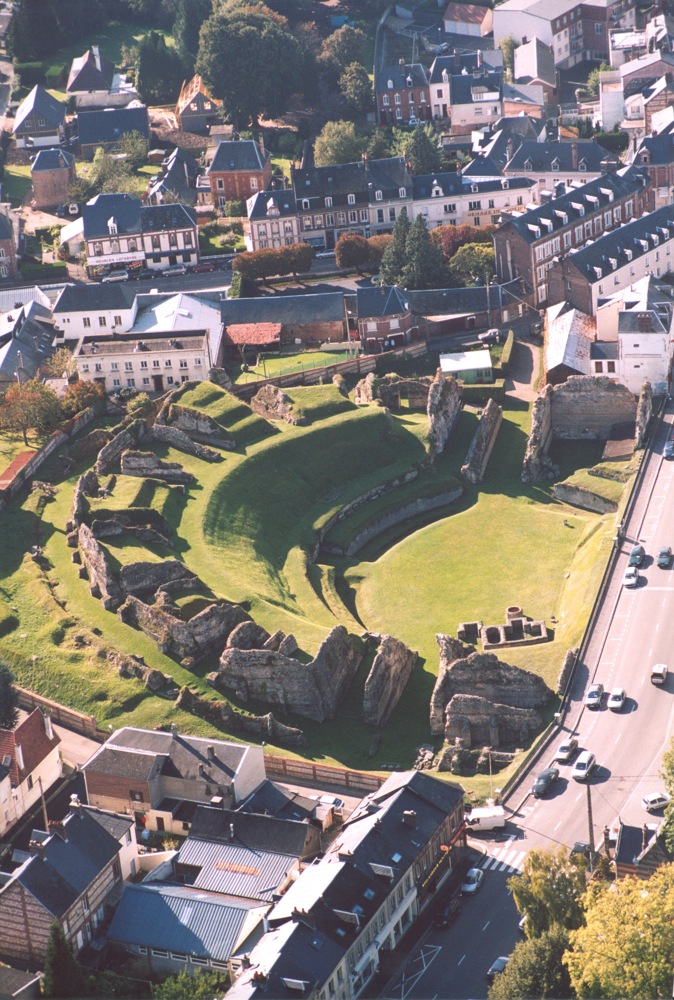
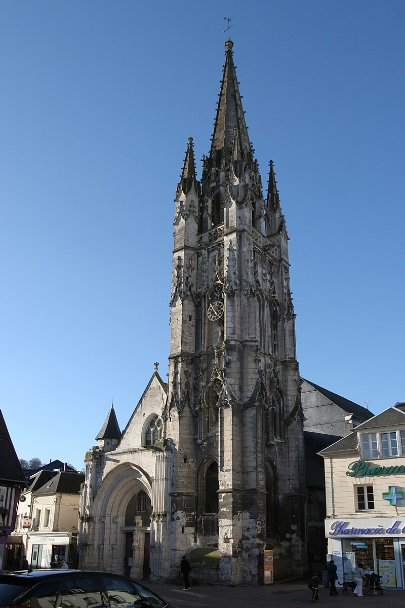

Top three cultural heritages to see in Lillebonne

The antique roman theatre
It went through several stages, in the 1st century a small theater, then became a amphitheater also serving as an arena. Finally, in the 4th century, a fortress serving as an outpost to the city.

William the conqueror's castle
Tradition holds that William the Conqueror was in his castle at Lillebonne when he made his decision to invade England. 11-13th century.

The church of Notre-Dame de Lillebonne
Built in the 16th century, Neo-Gothic style. I don't know much more about it, i just think it's cool.